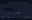
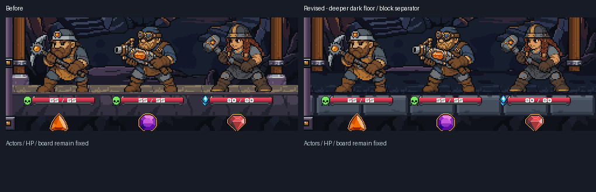
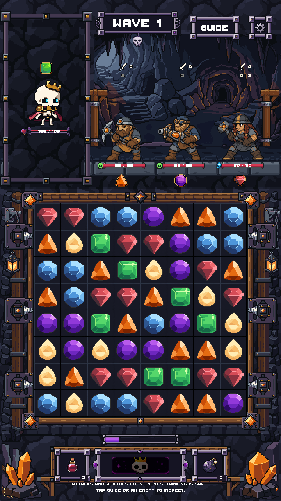
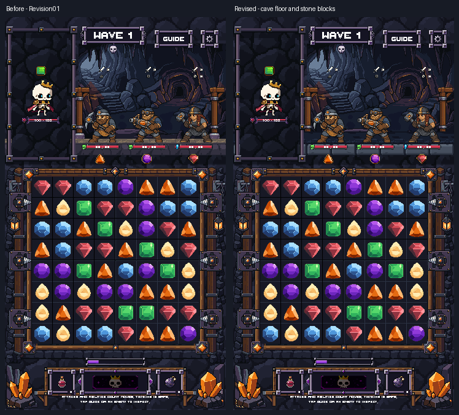

FloorSurfaceA
32 x 20 / 4 colors

The standing surface now reaches farther back into the cave and uses the cave's near-black slate colors. The front separator is a row of broad, lighter charcoal stone blocks with clear joints and restrained top edges. Enemy feet, health bars, board and other artwork stay fixed.



32 x 20 / 4 colors

32 x 20 / 4 colors
40 x 19 / 6 colors
40 x 19 / 6 colors
Direct LibreSprite editing of the existing PixelLab floor source plus modular native stone blocks. No new PixelLab generations. Prior scenes/assets remain intact. Four native exports match their reopened ASE files and Unity imports; binary alpha, exact repeat edges, Point filtering and no compression.
Unity image checks at three sizes preserve every pixel outside the platform band and all protected opaque actor/UI pixels. Original Graphic geometry and sprite references are unchanged. This is an art-only Unity preview, not production integration or phone testing. No merge.
Unity checks / Native checks / Scene comparison / Validation / Previous revision